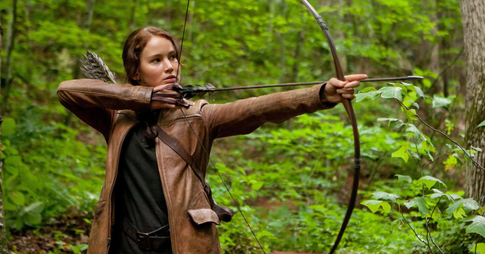

Stranger Things
Miért ez az egyik kedvencem?
Igaz, hogy ez egy sorozat, de nekem ez az egyik kedvencem.
- Mert fent tartja az érdeklődésem
- Nagyon jó zenéket írtak
- Remek színészek
- Több szálon fut a cselekmény
- Izgalmas sci-fi elemek és az éppen elegendő horror-faktor
Éhezők viadala
És miért ez a kedvenc filmem?
- Elgondolkodtató a jövőbeli világgal kapcsolatban
- Érdekes képzelgés a jövőről
- Tetszik a cselekmény
- Remek színészek
- Az egész világot a világshow-k köré építik